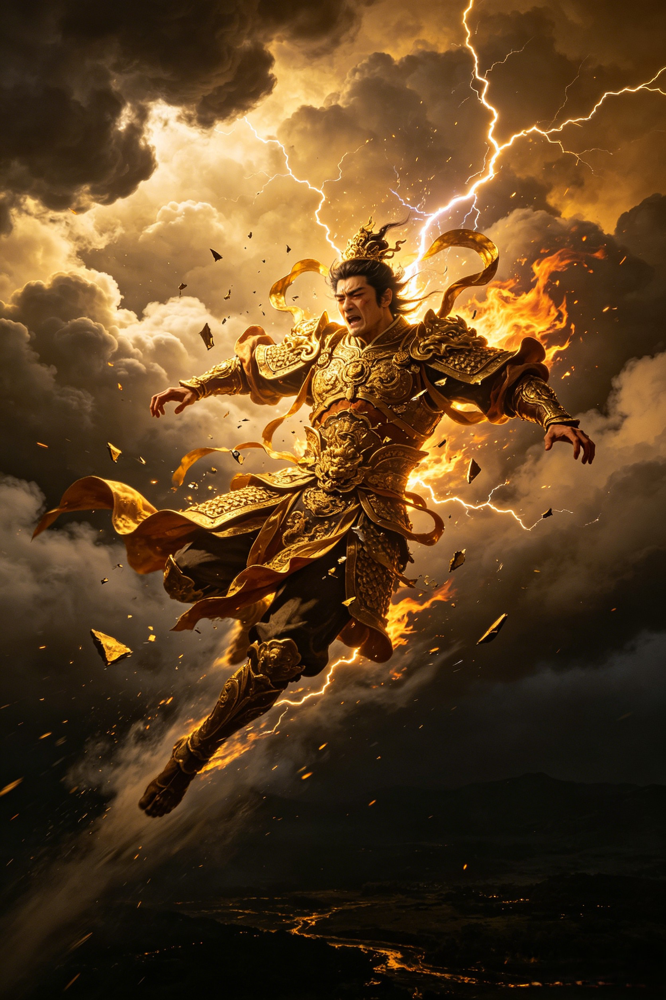

Origins
Fall from Heaven
The tragedy and dark comedy of how the supreme commander of the celestial navy lost everything — his rank, his immortality, and his human form.
Origins
The tragedy and dark comedy of how the supreme commander of the celestial navy lost everything — his rank, his immortality, and his human form.
**Zhu Bajie** was once Marshal Tianpeng (天蓬元帅), commander of 80,000 celestial naval troops. After drunkenly flirting with the moon goddess Chang'e at the Peach Banquet, he was banished to the mortal realm and accidentally reborn from a sow's womb as a pig demon.

Before he was Zhu Bajie, he was Marshal Tianpeng — supreme commander of 80,000 celestial sailors, guardian of the Heavenly River that flows through the stars. His power was immense: he commanded the tides of the Milky Way itself. A golden immortal who had cultivated his way to the highest ranks of heaven through sheer martial prowess. In the celestial hierarchy, he stood among the most powerful military figures, answerable only to the Jade Emperor himself.
The Peach Banquet of the Queen Mother of the West was the most exalted gathering in heaven — and Marshal Tianpeng drank deeply. The immortal wine clouded his judgment and awakened desires that a celestial commander should have long transcended. Drunk and emboldened, he wandered into the moon palace and made advances toward Chang'e, the moon goddess. It was a transgression that could not be undone — a violation of the celestial order by one of its own guardians. The moon goddess fled. He was seized by celestial guards. And the Jade Emperor's verdict was swift.

The sentence was merciless. Tianpeng was stripped of his rank, his divine weapons, and his immortality. He was sentenced to two thousand lashes with a golden rod — each strike burning away a fragment of his divine essence — and then cast down from heaven, his spirit hurled into the cycle of reincarnation. But fate had a darker twist waiting. As his spirit descended toward a human rebirth, it missed its mark. It entered the womb of a sow instead. He was born into the mortal world as a creature with the body of a man and the head of a pig.
In the years that followed, the fallen marshal became a monster. He settled in the mountains, took a wife by force, and survived by hunting and eating travelers. The supreme commander who once sailed the celestial river now lurked in a cave — a terror to local villages. Yet even in his degradation, some part of his divine strength remained: he was unnaturally powerful, able to wield weapons no mortal could lift. When Guanyin, the Goddess of Mercy, found him, she saw not just a demon, but wasted potential. She offered him a path back: protect the Tang Monk on his journey west, and earn a second chance.
Unlike Sun Wukong's staff — a pillar stolen from the Dragon King's treasury — Tianpeng's rake was bestowed upon him honorably. Forged by Laozi, the most exalted of immortals, from celestial iron and infused with divine power. It was a weapon of a commander, not a rebel: heavy, practical, devastating in close combat. Even after his fall, he kept the rake. It was the last remnant of who he once was — a reminder that before the pig, there had been a marshal.
Dive Deeper